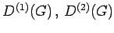
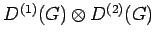
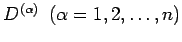
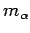
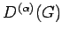

Inhalt Index DeskTop Bronstein

 Algebra und Diskrete Mathematik Klassische algebraische Strukturen Darstellung von Gruppen
Algebra und Diskrete Mathematik Klassische algebraische Strukturen Darstellung von Gruppen


Das KRONECKER-Produkt zweier irreduzibler Darstellungen  ist im allgemeinen reduzibel. Durch eine geeignete Basistransformation im Produktraum kann  in eine direkte Summe seiner irreduziblen Bestandteile  zerlegt werden (CLEBSCH-GORDAN-Theorem). Diese Entwicklung nennt man CLEBSCH-GORDAN-Reihe:
Hier ist  die Multiplizität, mit der die irreduzible Darstellung  in der CLEBSCH-GORDAN-Reihe auftritt.
Die Matrixelemente der Basistransformation im Produktraum, die eine Reduktion des KRONECKER-Produktes in seine irreduziblen Bestandteile bewirkt, heißen CLEBSCH-GORDAN-KOEFFIZIENTEN.